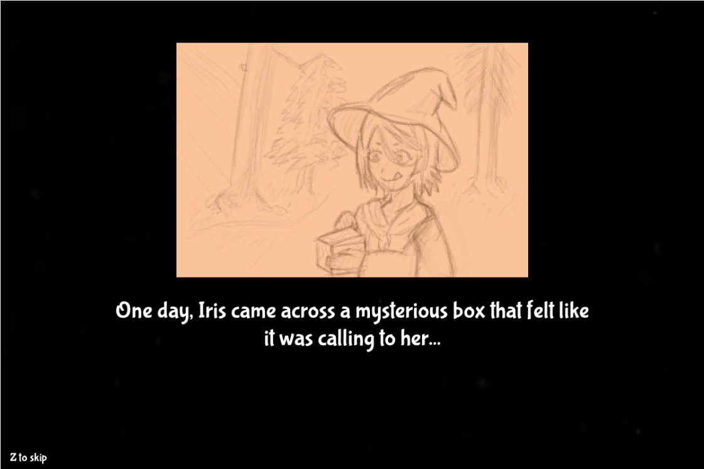
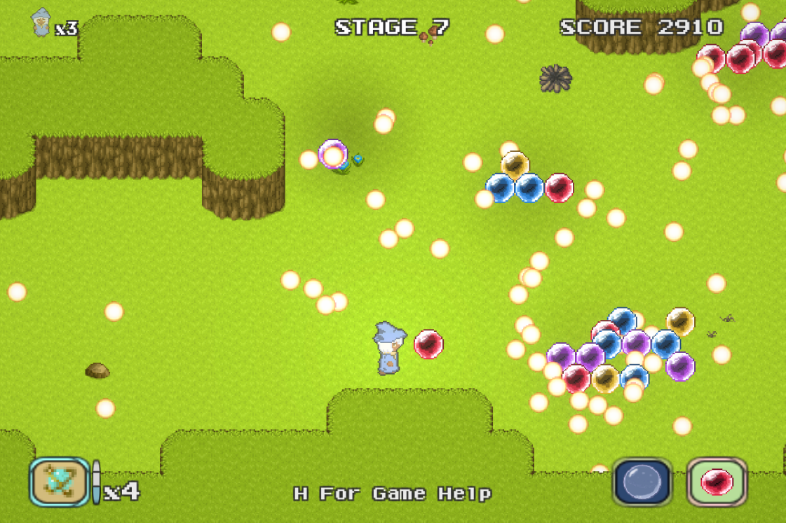
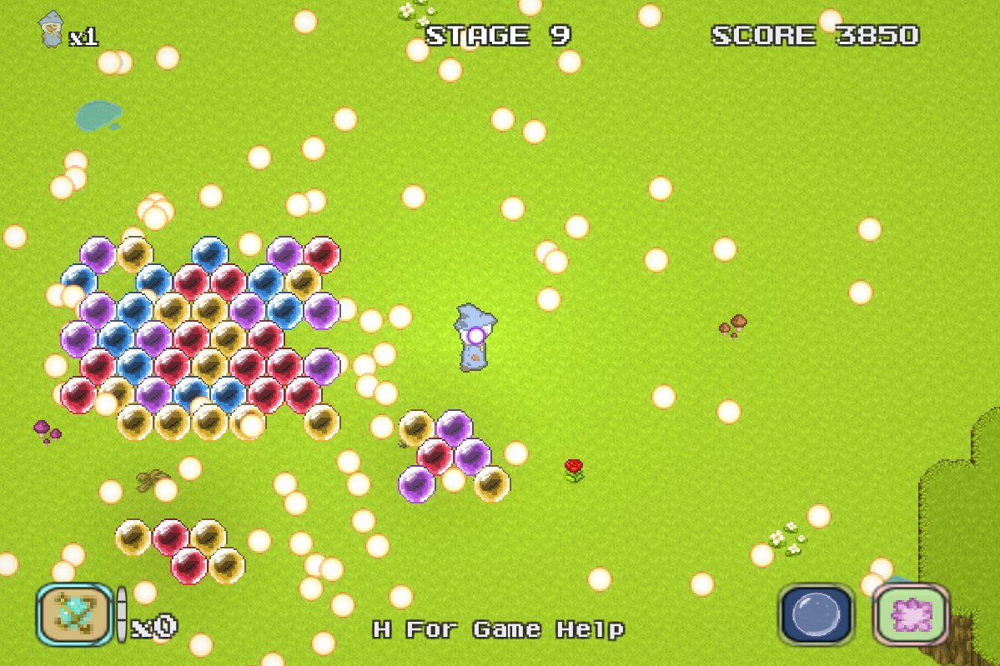
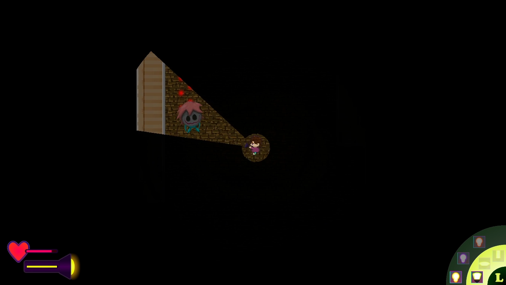
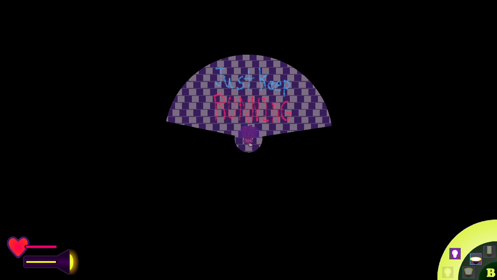
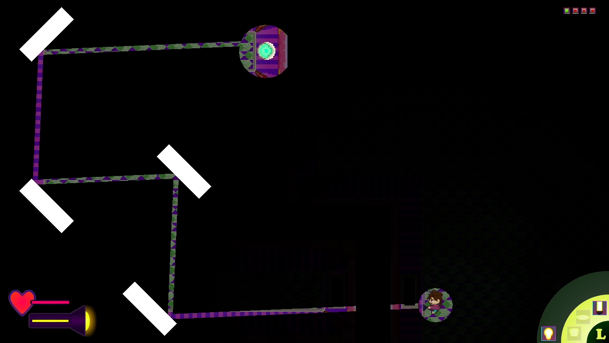
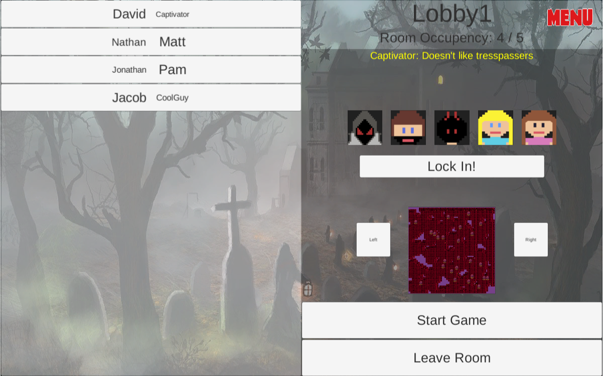
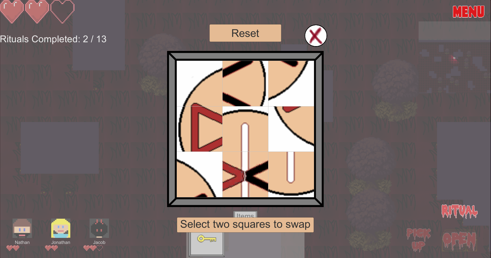
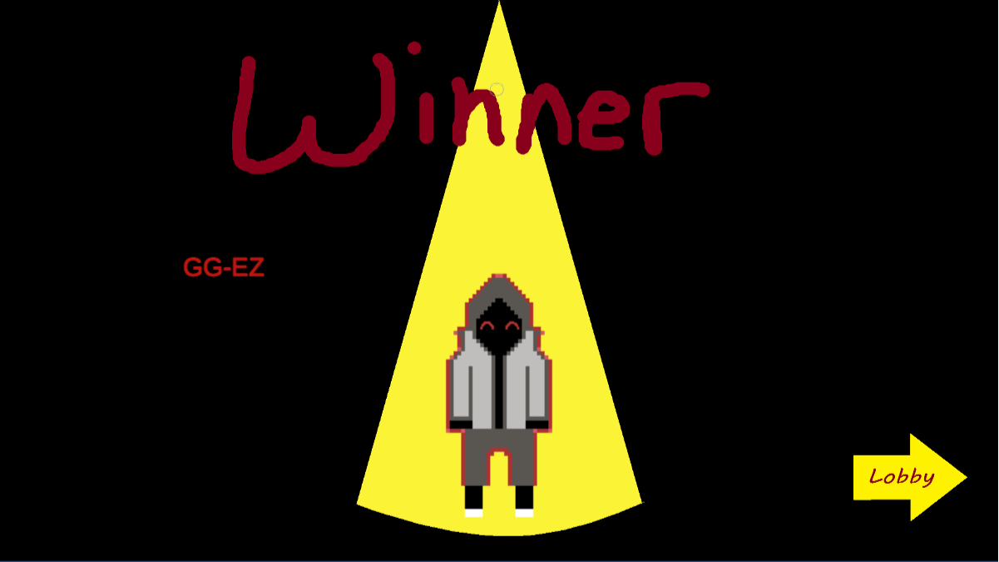

Developers Alicia Taing
Bill Pham
Hans Wilter
Hamza Siddiqui
CyberDefender 2077
Wake the hell up, intern! We have a system to clean.
CyberDefender 2077 is a vibrant and punchy single-player 2D top down shooter. You play as an underpaid intern whose job is to defend your company's computer system from rampant malware and viruses. Dive into the virtual world and explore the various components of the system, hunting down malicous programs along the way. Collect new weapons, obtain powerups, try to purchase relics, come back when you actually have the money to purchase relics, and DEFEND THE MAINFRAME!
Game Pitch
Design Doc
Click to Play
Eggcell
Yttria AniseiaRyan Le
Sonlam Nguyen
Nathan Ngo
(full credit ingame)
?Bubble Witch Iris?
?Bubble Witch Iris? is a bullet hell cute ‘em up combining the intense action of procedurally generated twinstick shooters with the bright environments and quick thinking of 90s arcade puzzle games.
  
Team JINCS Developers Joshua Sterner
Isaiah Snow
Nic Chambers
Carlos Nuñez
Caustic Park:
Navigate through an empty amusement park using only your flashlight to solve a variety of puzzles and make your escape - all while avoiding the monsters in the dark.
Project Proposal
EXE Download
Website
|
Here is a 7+ minutes speedrun of the entire game |
  
Developers David Kim
Jonathan Cho
Jacob Pierce
Nathan Wong
Danger in Captasia
Danger in Captasia is an online multiplayer thriller game where one to four players take on the role of explorers and one player takes on the role of a captivator. The explorers cooperate and try to escape or get captured trying. The captivator has skills and abilities that must be utilized in order to capture the explorers. The explorers must traverse the map, finding helpful items and do rituals.
  
Developers: Nina Panganiban
Nick Naslund
Mason Honold
Taylor Eyler
Chomp's Back-Alley Bistro:
Play as Chomp as he starts a diner in the alleyway behind a 5 star restaurant. Collect ingredients from what the wasteful humans throw out and serve the local animals. The story follows Chomp as he sets up his restaurant and serves his first few customers. As the story progresses, the game becomes more complicated, reflecting Chomp’s growth as a chef. He slowly learns how to make more elaborate dishes and deal with more customers at once, reflecting the increasing difficulty as the levels go on.
Website + Play Game
Game Pitch
Design Doc
Retro Talk


All sound effects from Epidemic Sound
Developers Kyle Gersbach
Mingzhen Wang
Daniel Penkov
Omer Ronen
Gravi-Tau
Gravi-Tau is fun pseudo-realistic take on an infinite 2D space shooter. In this game world, it is your mission to fight off the invasion of space pirates that is taking over the solar system. With physics implemented into the interactions of the objects you can find in space, as well as a wide range of enemy pirate fleets to challenge your combat abilities, this fast-paced shooter game is bound to provide you with an eventful space journey. Just be careful you don’t get too close to any blackholes! You’ve been warned!
Game Design Document
Click to play (WebGL)
Download (Windows/Mac)


Developers: (Mongoose Gaming)Jayden Fullerton, Kyle Durkart
Sammy Lew, Victor Shaw
Mongoose Gaming: Monster Defender
Monster Defender is a tower defense strategy game where you have to place towers to defeat all the monsters. The player defends against seven monster waves that will randomly spawn in random time increments. If the player defeats all the monsters, they win the game.Game Pitch Game Design Doc Click to play (WebGL) PC EXE (download to unzip) MAC EXE (download to unzip)


Developers: (Pajama Programmers)Jacob McHugh, Phuc Tran
Patrick Lam
Pajama Programmers: ZOOm
ZOOm is a third person view 3D racing game that allows players to pick the animal from a zoo as their main character.Game Pitch Game Design Doc Game Retro Talk PC EXE (download to unzip) MAC EXE (download to unzip)


Developers Grace Nelson
Uyen Hoang
Yun-ting Chen
Max Nguyen
Glitch Website
Stranded:
Solve Sokoban puzzles to get back to your proper place in time
Game Pitch
Game Design Doc
Game WebGL
Game PC EXE (download to unzip)
Brian Clark
Chapman Tse
Jaedan Parsons
Dungeon Grit:
A 2D side-scrolling platformer, where you must escape from a dungeon with only one life. Kill enemies to gain crystals, then use them to imbue up your sword with 4 different powers: Fire, Ice, Poison, and Holy. Use potions to keep your health topped off, or to give yourself advantages like increased speed. Find secret areas with hidden chests full of useful items. Do you have the grit it takes to escape?
Project Proposal
Game Design Document
Click to play (WebGL)